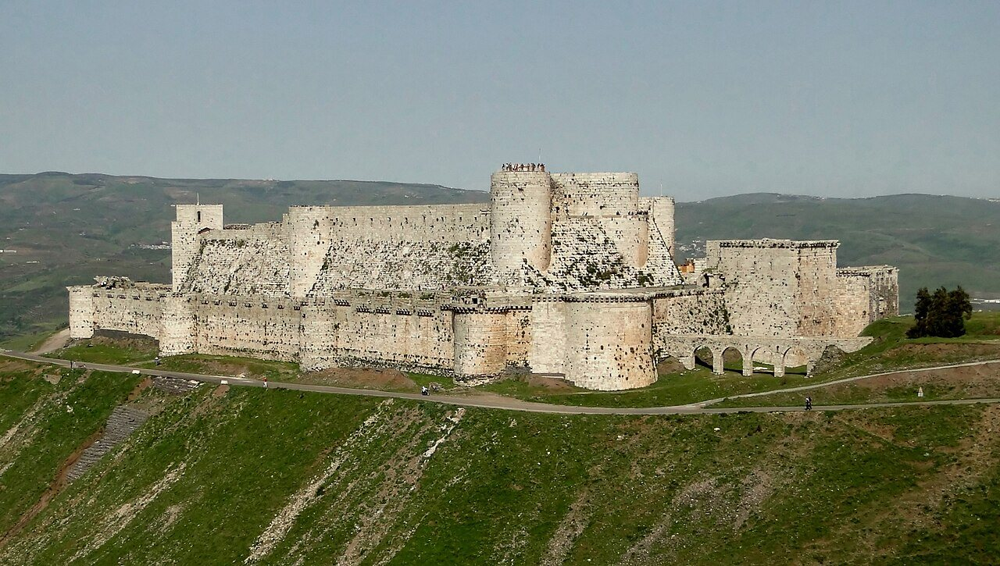
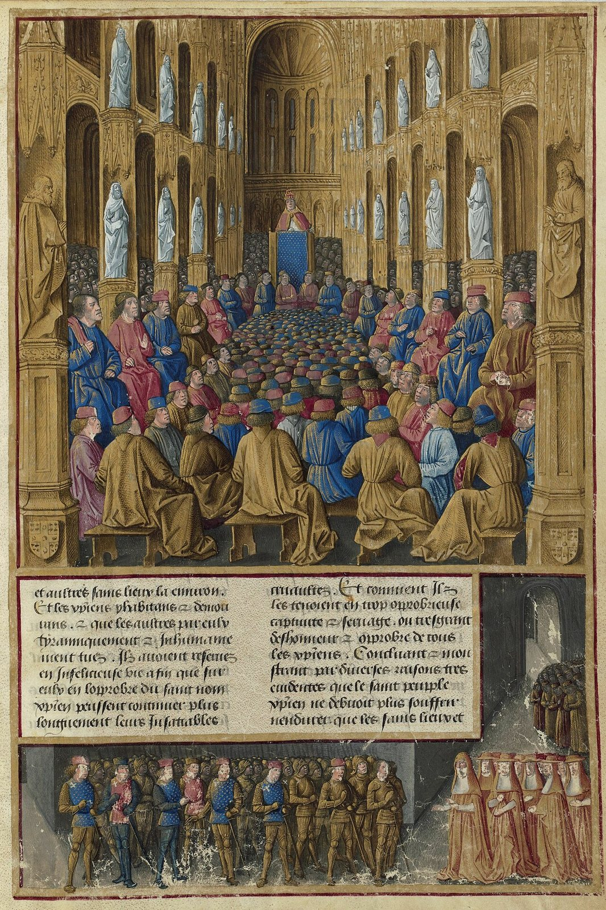

사진 · 크락 데 슈발리에
중학교 역사① · 3단원 세계 종교의 확산과 지역 문화의 발전
성십자군 전쟁: 충돌과 교류
크락 데 슈발리에 · 사진 Bernard Gagnon · CC BY-SA 4.0
“십자군 전쟁은
십자군 전쟁은
성스러운 전쟁이었을까?
사실1096년부터 약 200년, 여러 차례
해석누가, 왜 떠났을까
확장누구의 눈으로 볼까

사진 · 교황은 무엇을
약속했을까?
교황은 무엇을
약속했을까?
누가교황 우르바누스 2세
언제1095년 클레르몽
사실·주장그림은 약 400년 뒤
장 콜롱브, 클레르몽 공의회(『해외 원정기』, 15세기) · CC0
왜 떠났을까?
믿음성지와 죄 사함
땅새 영지
돈무역 이익
명예기사의 이름
1099
사실십자군이 예루살렘을 점령하다
해석많은 주민이 죽임을 당했다
확장양쪽 모두의 기록에 남다
‘프랑크인’의
침입
사실아랍 연대기가 부른 이름
해석같은 전쟁, 다른 이름
확장‘십자군’이라는 말은 언제 생겼나
1187
사실살라딘이 예루살렘을 되찾다
해석몸값을 받고 주민을 내보내다
확장적에게서도 존경받은 장수?
1204
사실4차 십자군이 콘스탄티노폴리스를 약탈하다
해석같은 크리스트교도의 도시
확장베네치아의 계산
전쟁이 남긴 것
물건향신료 · 설탕
지식의학 · 수학 책
도시이탈리아 상업 도시
권력교황권은 흔들리고
누구의 전쟁이었나?
유럽 기사성지 회복
무슬림 주민침략과 저항
비잔티움도움을 청했다가
유대인양쪽의 피해
오늘의
‘십자군’
사실지금도 쓰이는 말
해석누군가에게는 상처
확장말을 고를 때 조심할 점
“십자군 전쟁은 전쟁이었다.